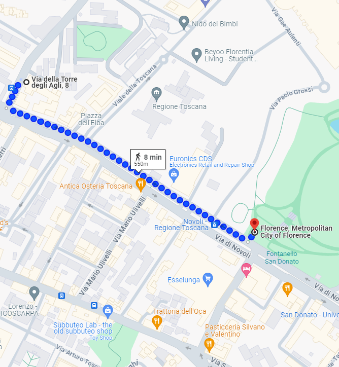
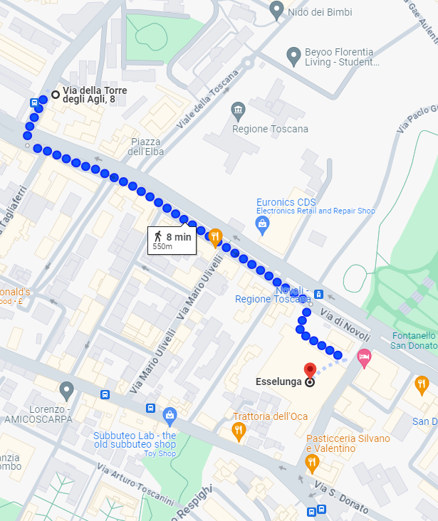
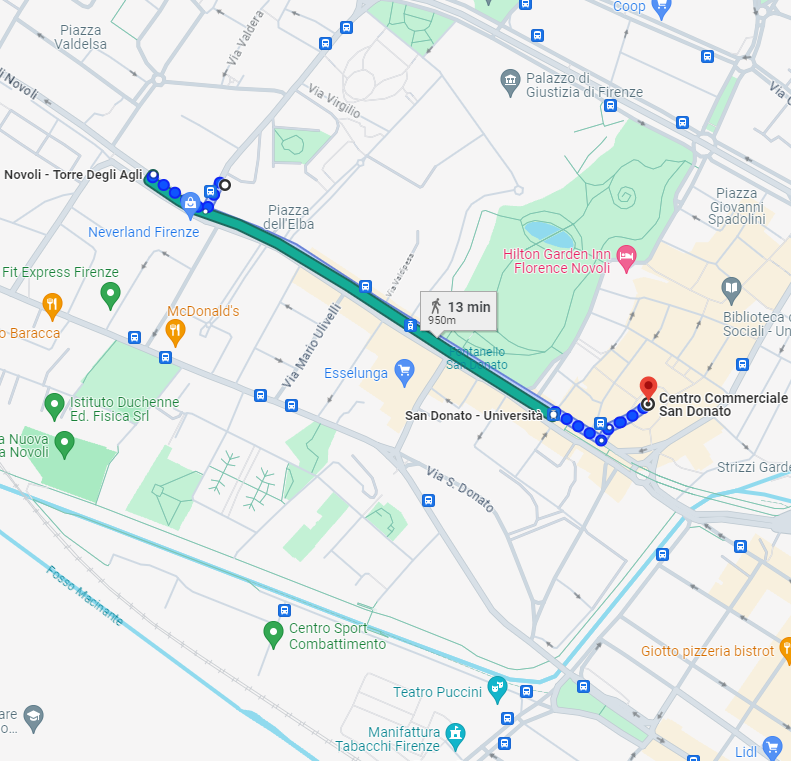
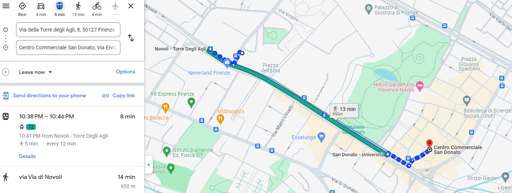

Alrededores
La zona de Novoli, aunque no está en el animado centro de la ciudad, ofrece un refugio tranquilo y conveniente con una amplia variedad de servicios locales.
A la vuelta de la esquina
- Disfruta de un buen desayuno en la pastelería Gaetano, a pocos metros de la casa, saborea los deliciosos productos recién horneados de la panadería La Schiacciateria y déjate tentar por las preparaciones de la carnicería Ambrogi. Una tienda de kebab, una pequeña tienda de comestibles y una frutería completan el panorama de las actividades locales, justo detrás de la esquina entre Via della Torre degli Agli y Via di Novoli.
- Cerca de allí, también encontrarás un reconocido restaurante de mariscos y un tradicional camión de comida callejera para el lampredotto y otros tipos de sándwiches, ambos accesibles a pie.

Parco San Donato
- Para relajarse con un poco de verde, el Parco San Donato está a solo 5 minutos a pie. Este parque ofrece amplios espacios abiertos, ideales para caminar, correr o simplemente para sentarse y disfrutar de un día de sol. 

Centro comercial Esselunga
- Para hacer compras más grandes, el supermercado Esselunga está a solo 8 minutos a pie. Aquí encontrarás un supermercado bien surtido para todas tus necesidades alimentarias, además de una amplia selección de otros productos para el hogar. 

Centro comercial San Donato
- Para relajarse con algo de compras, el Centro Comercial San Donato, con el cine The Space y el gimnasio Virgin Active, está a solo 12 minutos a pie o 8 minutos en tranvía. Aquí podrás encontrar varias tiendas, restaurantes y entretenimiento para pasar un buen día.  
Farmacia más cercana
- Hay dos farmacias a solo 5 minutos a pie. Aquí encontrarás todo lo necesario para tu salud y bienestar, incluidos medicamentos de venta libre, productos de cuidado personal y consejos de personal cualificado.


Camión de comida street food Tripperia
- Un camión de comida callejera, llamado 'Il Trippaio', está a solo 7 minutos a pie. Aquí podrás disfrutar de algunos de los sabores auténticos de la tradición florentina, como el famoso lampredotto, preparado y servido fresco todos los días.


Ristorante Antica Osteria Toscana
- A pocos pasos de casa, el restaurante Antica Osteria Toscana ofrece una auténtica cocina toscana con platos típicos de carne de la tradición florentina. Ubicado en Via di Novoli 73, a 5 minutos a pie del apartamento, aquí podrás probar la famosa bistecca alla fiorentina. Ristorante Antica Osteria Toscana
Ristorante Settimo
- El Ristorante Settimo está a solo 10 minutos a pie. En Florencia desde 1975, este restaurante es famoso por su cocina de mariscos con ingredientes siempre de primera calidad y un ambiente acogedor, perfecto para una cena con sabores tradicionales del mar italiano, después de un día de exploración.